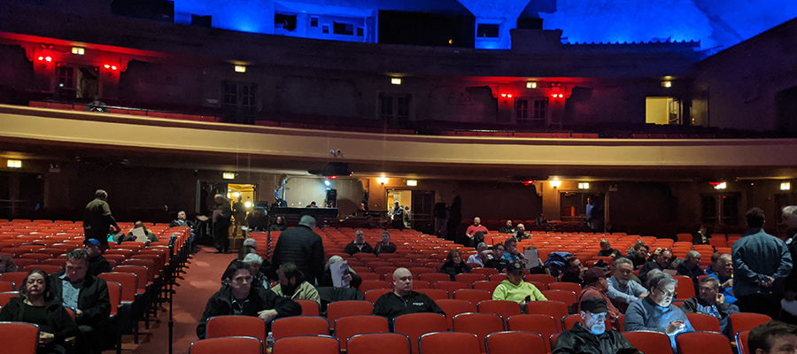

Using automated transcripts to actively find and engage the people who make a difference.
Documenters
Public meetings are broken, but they contain unstructured data that is rarely used to advance policy.
CUTGroup
Direct community engagement of real people in communities pulls treasured information.
AI Agents
Build tools to automatically search for and convince like-minded people to advance a given policy.